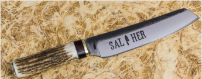
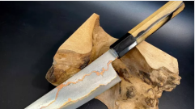
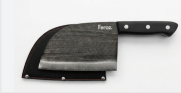
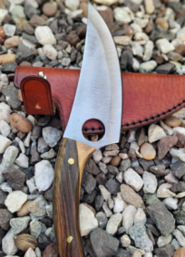

Personalizados



Los cuchillos personalizdos no siguen patrones o modelos estándar. Son el resultado de solicitudes o intenciónes del creador. Los materiales usados son madera dura (cualquierda disponible o brindada) y diversos tipos de acero con alto contenido en carbono
